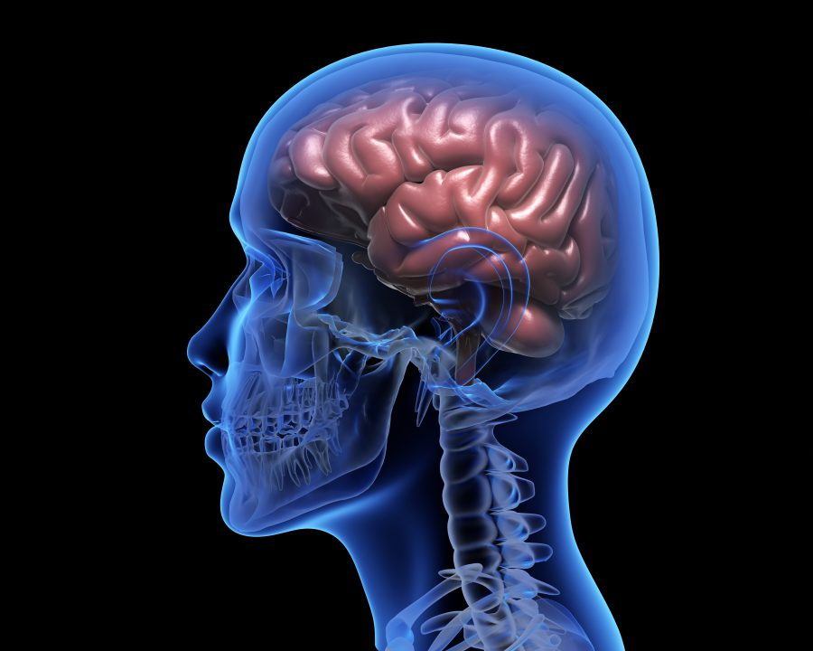
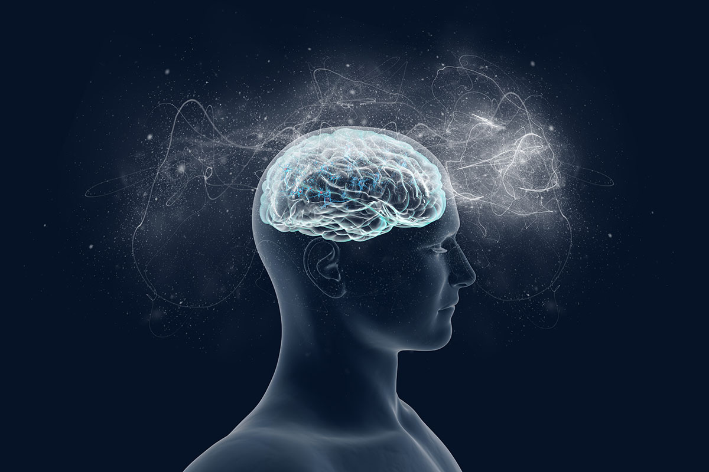

The Human Brain
Discover the complexities of the human brain and its role in behavior, cognition, and health.
Home Page: Introduction to Neuroscience and Brain Function
Neuroscience is the scientific study of the nervous system, which consists of the brain, spinal cord, and vast networks of neurons that carry messages throughout the body. It seeks to uncover how this intricate system develops, operates, and affects everything from movement to memory and emotions.
The brain serves as the command center of the nervous system, coordinating thoughts, emotions, memories, and physical actions. It contains billions of neurons that send and receive information through electrical and chemical signals. Specific brain regions have specialized roles—for example, the frontal lobe is responsible for planning and judgment, while the occipital lobe handles vision. By understanding these functions, scientists can better identify and treat conditions that affect brain health.
|  |  |  |
Visual representation of brain anatomy and functions.
Neuroplasticity: How the Brain Adapts and Changes
Neuroplasticity is the brain’s ability to reorganize itself by forming new neural connections throughout life. This capacity allows the brain to adjust in response to learning, sensory input, experiences, and even injury.
This adaptability is not only essential for learning but also for recovery. After a brain injury, undamaged parts of the brain can often take over the functions of the affected areas by rewiring connections. These changes don't happen instantly, but with time, effort, and the right stimulation, the brain can improve and restore function to surprising degrees.
Illustration of neuroplasticity in the brain.
- Types of Neuroplasticity:
- Functional Plasticity: This type focuses on the brain's ability to adapt its function by relocating functions from a damaged area to other, undamaged areas.
- Structural Plasticity: This type involves the brain's ability to physically modify its structure as a result of learning and experience.
- Factors Influencing Neuroplasticity:
- Age: Neuroplasticity is most robust in early childhood, but it continues throughout life, although it may decline with age.
- Experience: The brain constantly adapts based on experiences and learning, leading to changes in neural connections.
Mental Health: Overview of Mental Health and Its Importance
Mental health refers to a person’s emotional, psychological, and social well-being. It affects how individuals think, feel, and behave, as well as how they handle stress, relate to others, and make decisions. Good mental health helps people cope with the challenges of life, maintain relationships, perform daily activities, and recover from setbacks.
Maintaining good mental health is essential for a fulfilling life. Here are some key points about mental health:
 |
Importance of mental health in our lives.
- Mental health affects how we think, feel, and act.
- It influences how we handle stress and make choices.
- Good mental health boosts overall well-being..
Key Brain Functions and Their Importance
| Function | Description | Importance |
|---|---|---|
| Cognition | The mental action of acquiring knowledge and understanding. | Critical for decision-making and problem-solving. |
| Emotion Regulation | The ability to manage and respond to emotional experiences. | Essential for mental health and social interactions. |
| Memory | The process of encoding, storing, and retrieving information. | Vital for learning and adapting to new situations. |
| Motor Control | The coordination of muscle movements. | Necessary for physical activity and coordination. |
Conclusion
The human brain is a remarkable organ with incredible capabilities. Understanding its functions and the importance of mental health is crucial for personal well-being and societal progress. As we continue to explore the complexities of the brain, we can unlock new potential for treatment and enhance our quality of life.
Brain Conclusion
A summary of brain functions and their importance.